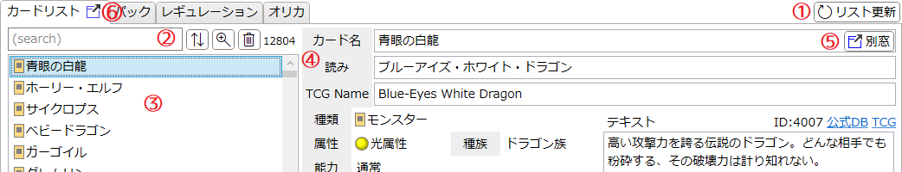
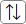
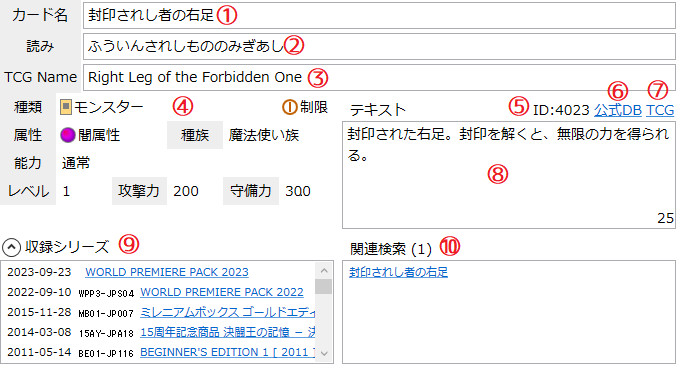
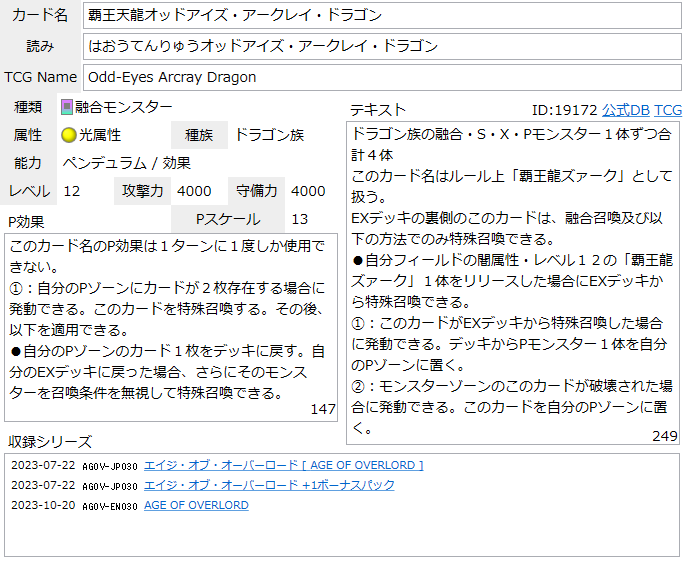
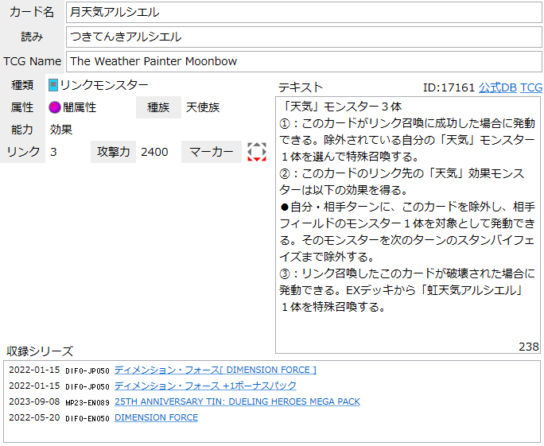
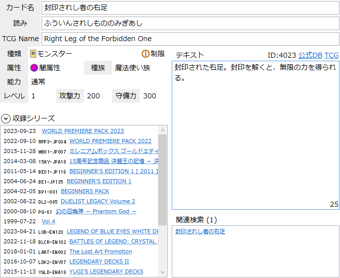

「カードリスト」タブ
『遊戯王OCG』(及び『Yu-Gi-Oh! TCG』)に存在するカードを一覧するためのタブです。
説明

-
リスト更新ボタン
- 新パックの発売などでカードが追加/変更されている場合、このボタンを押すとその更新内容をカードリストに適用します。
- 公式データベースにアクセスするため、負荷対策として1時間に1度しか機能しないようになっています。
-
サーチバー
- リストの内容の絞り込みや並べ替えを行います。
-
テキストボックスに入力してEnterを押すとテキスト検索を適用します。
詳しくは検索ウィンドウ/文字列検索を参照してください。 -

: ソートウィンドウを開きます。 -
 : 検索ウィンドウを開きます。
: 検索ウィンドウを開きます。
-
 : 絞り込みを解除します。
: 絞り込みを解除します。
- サーチバーの右端には、現在そのリストに表示されている項目の数が表示されます。
- ソート及び検索の状態は「レギュレーション」タブのリストと共有されます。
-
カードリスト
- カード名が羅列されています。
- 項目を選択すると右側にカード情報が表示されます。
- Shiftキーを押しながら項目をクリックすると、山括弧《》で囲ったカード名がクリップボードにコピーされます。
-
カード情報欄
- 選択されているカードの詳細が表示されます。
- 詳しくは下記カード情報を参照してください。
-
別窓ボタン
- 選択されているカード情報欄を独立したウィンドウで表示します。
- 複数のカード情報を見比べたい時などにお使いください。
- 同じカードのウィンドウを複数表示することはできません。
- メインウィンドウを閉じる際に、子ウィンドウは全て閉じられます。
- 別窓ボタン(タブ)
カード情報
選択されたカードの詳細情報が表示されます。

-
カード名
- 公式データベースに記載されているこのカードの名前です。
- OCG未発売のカード(TCG先行カード)の場合は英語版のカード名がそのまま表示されます。
-
読み
- 公式データベースに記載されているこのカードの読み方です。
- OCG未発売のカード(TCG先行カード)の場合はここが空欄になります。
-
TCG Name
- TCG(英語版)の公式データベースに記載されているこのカードの名前です。
- TCG未発売のカードの場合はここが空欄になります。
-
基本情報エリア
- このカードの種類や、モンスターであればそのステータスなどが表示されます。
- 制限の表記は公式データベースでの扱いではなく、「レギュレーション」タブで設定したものが反映されます。
- ペンデュラムモンスターの場合、基本情報欄の下にペンデュラム効果及びペンデュラムスケールの情報が記載されます。
-
リンクモンスターの場合、基本情報欄の「守備力」の代わりにリンクマーカーを表すアイコンが表示されます。


-
カードID
- 公式データベースのURLで確認できる、このカードの固有番号です。
- パック収録時のカードナンバー(イラスト枠の右下に記載)やパスワード(カード左下に記載)とは異なります。
- 基本的には後発のカードほど大きなIDが充てられますが、欠番となっていたIDが後に登場したカードに充てられる事例もあります。(《タロンズ・オブ・シュリーレン》など)
-
公式DBリンク
- OCG日本語版のこのカードの情報ページを開きます。
- イラスト、各種裁定、Q&Aなどを確認したい場合にご利用ください。
-
TCGリンク
- TCG英語版のこのカードの情報ページを開きます。
- OCG未発売のカード(TCG先行カード)の情報を確認したい場合はこちらをご利用ください。
-
カードテキスト
- このカードのテキスト内容が表示されます。
- テキストボックスの右下にはこのカードのテキストボックス内の文字数(スペース/改行は除く)が表示されます。
- テキストは編集可能ですが、基本的には内容のコピーなどを目的としており、この編集内容がデータベースに反映されることはありません。
-
収録シリーズ
- このカードが収録されているカードパックなどの一覧です。
- 日付は公式データベースに記載されている「公開日時」であり、実際の発売日とは異なる可能性があります。
- カードナンバーがある場合は日付の隣に表示されます。
- パック名のリンクをクリックすると「パック」タブに切り替わり、該当パックが選択された状態になります。
-
ヘッダー(「収録シリーズ」と書かれている)部分をクリックするとリストが上方向に伸長されます。

-
関連検索
- リスト内のリンクをクリックすると、「カードリスト」タブの検索バーにその名前を入力して文字列検索を行います。
- リストには、そのカード自体の名前と、そのカードテキスト内で「」で囲われて指定されている名前が一覧されます。